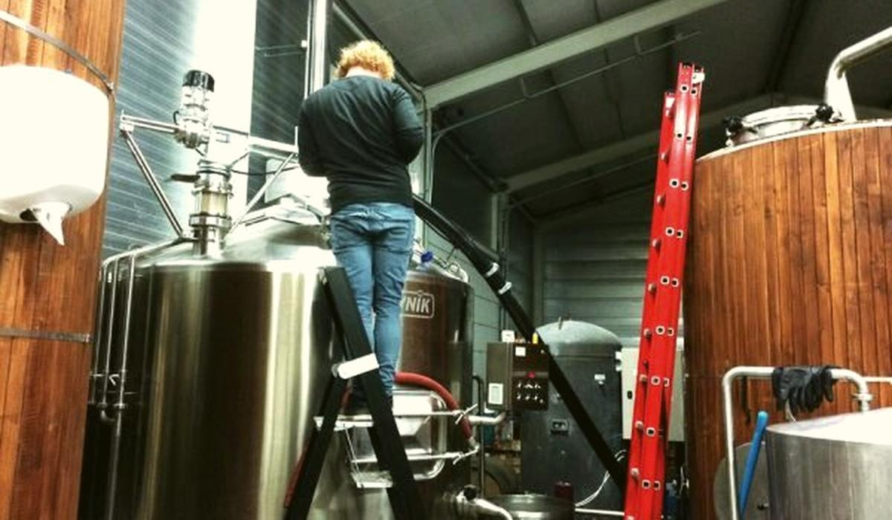

Are you getting the extract you paid for, brew by brew?
Brewhouse yield is the oldest number in brewing and still one of the most often miscalculated. Get the basis right, track it per brew and it tells you where the extract went.

The number every brewer quotes and few compute the same way
Ask three breweries for their brewhouse yield and you will get three numbers on three different bases. One divides by the malt specification, another by the lab extract, a third uses hot wort volume from a dipstick. All of them look reasonable. None of them can be compared.
That matters because extract is what you buy. A point of brewhouse efficiency on a large brewhouse is tonnes of malt a year. When the yield is calculated loosely, the drift from a worn mill gap or a tired lauter bed hides inside the rounding.
The fix is to compute it the same way every brew, in mass of extract, on a stated basis and to plot it.
The formula, in base units
Brewhouse efficiency is the weight of extract recovered in the wort as a share of the weight of extract you charged to the mash.
Extract charged (kg) = sum of malt kg x (fine grind dry extract % - fine-coarse difference) / 100 x (1 - moisture % / 100)Coarse grind, as-is basis. State it and never change it quietly.
Extract in wort (kg) = cold wort volume (L) x SG(Plato) x 0.99820 x Plato / 100Volume at 20 C. 0.99820 kg/L is the density of water at 20 C and SG is the 20/20 specific gravity for that Plato.
BHE % = extract in wort (kg) / extract charged (kg) x 100If you add syrup or sugar after lauter, leave it out of both sides. It never went through the mash, so it says nothing about the mash.
A worked example
Say one brew uses 7,000 kg of pale malt. The lot analysis gives 81.5% fine grind dry extract, a fine-coarse difference of 1.5 and 4.5% moisture. Extract charged is 7,000 x (81.5 - 1.5) / 100 x (1 - 0.045), which is 5,348 kg.
The brew delivers 400 hL of cold wort at 12.0 Plato, measured at 20 C. The specific gravity of a 12.0 Plato solution is 1.04831. Extract in wort is 40,000 L x 1.04831 x 0.99820 x 0.12, which comes to about 5,023 kg.
| Value | |
|---|---|
| Extract charged | 5,348 kg |
| Extract in wort | 5,023 kg |
| Brewhouse efficiency | 93.9% |
If this brewhouse normally runs at 96%, the brew left about 2 points on the table, roughly 110 kg of extract. On one brew that is noise. On a hundred brews in a row it is a mill, a mash programme or a lauter that needs a look.
The traps that make the number lie
- Hot volume. Wort at 100 C occupies about 4% more volume than at 20 C. Use a hot reading uncorrected and the brewhouse looks four points better than it is.
- Gravity meter drift. A Plato reading 0.1 high on a 12 Plato wort inflates extract by close to 1%. Check the density meter against a standard on a schedule.
- Wrong malt basis. Fine grind extract instead of coarse, or dry instead of as-is, moves the denominator by several points. Pick one basis and print it on the report.
- Stale moisture. Malt that sat in a humid silo carries more water than the certificate says. Your charged extract is lower than you think and the yield looks better than it should.
- Weighing the grist. If the grist weight comes from the recipe rather than a scale, you are measuring the recipe, not the brew.
What good looks like
Good is a control chart of brewhouse efficiency per brew, one dot each, with the malt lot, mill setting and lauter time available on every point. A drop of a point that lasts more than a few brews triggers a look at the mill and the lauter before it becomes the new normal. The number is on the same basis across brewhouses, so a group can compare sites honestly.
Beer365 computes this per brew from the grist, cast volume and gravity records you already keep, on one stated basis and each figure cites the brew and malt lot it came from.
Part of the Beer365 solution for brewhouse.

Written by Ankur Napa
R&D brewer at United Breweries, SABMiller and AB InBev, then a data scientist on AI and generative AI for AB InBev's global business units. MSc Brewing Science and Technology, MSc Data Science and AI, Microsoft Certified Fabric Analytics Engineer. He leads Beer365 at Disruptive Advantage.
+91 7755 909445 · ankur.napa@disruptive-advantage.com
Ankur on LinkedIn · Talk to Ankur
Keep reading
More on brewhouse

BrewhouseIs your bitterness landing where the hop model says it will?
Every hop calculation assumes a utilisation figure. Measure the real one from your own IBU results and you find out what the kettle, the whirlpool and the cellar are doing to your alpha acids.
BrewhouseWhat do your whirlpool and trub losses cost a year?
A couple of percent of wort left behind at knock-out sounds like nothing. Corrected for temperature and counted in kilograms of extract over a year, it is one of the larger numbers in the brewhouse.
BrewhouseIs your mash chemistry where you think it is?
Mash pH is set by the water, the grist and the additions together. Predict it from residual alkalinity, measure it the same way every time and the gap between the two tells you what moved.
Bring one week of brew sheets
We will show you where the beer went, on a call, before anyone signs anything.
Or talk to Ankur directly: +91 7755 909445 · ankur.napa@disruptive-advantage.com